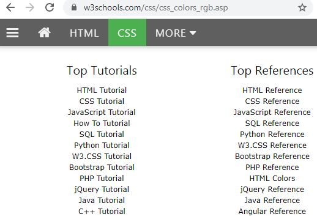
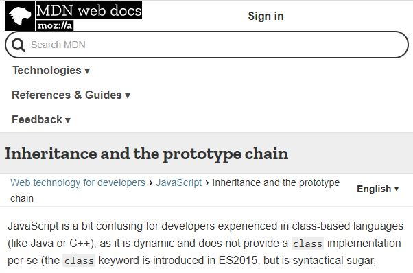
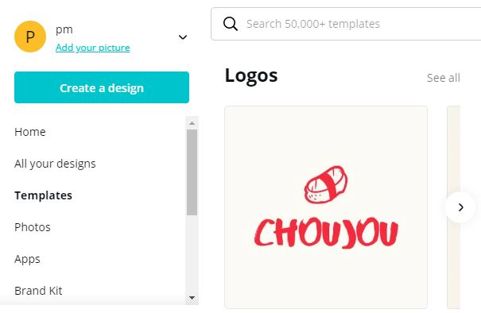
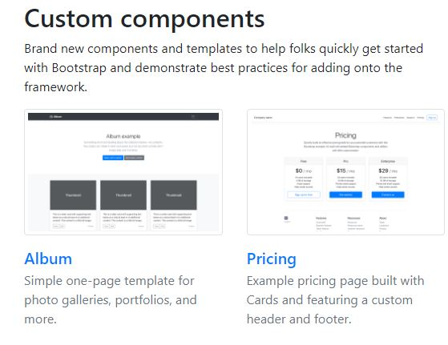
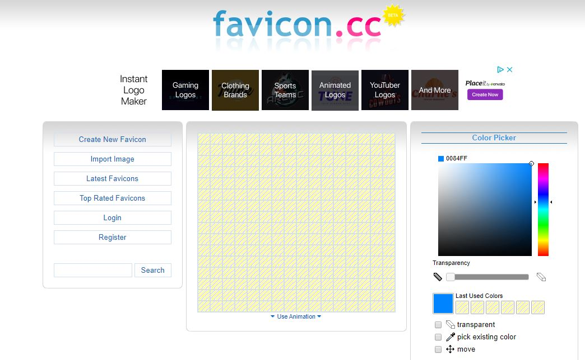
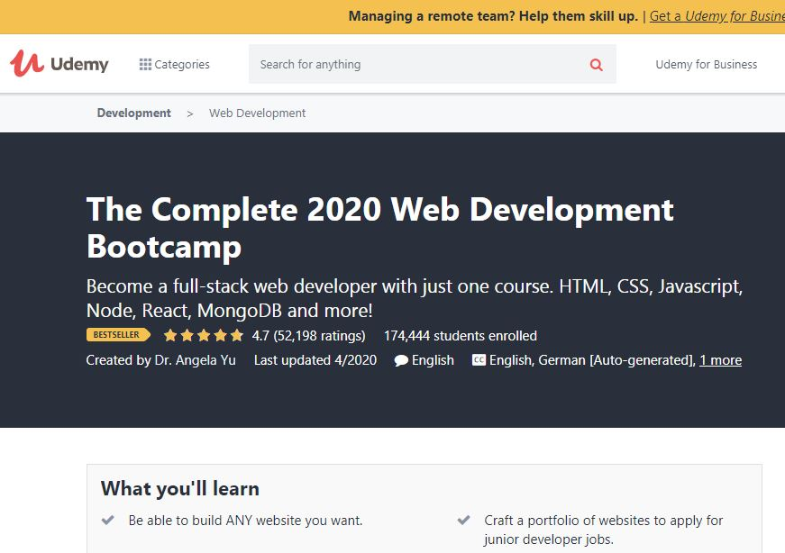
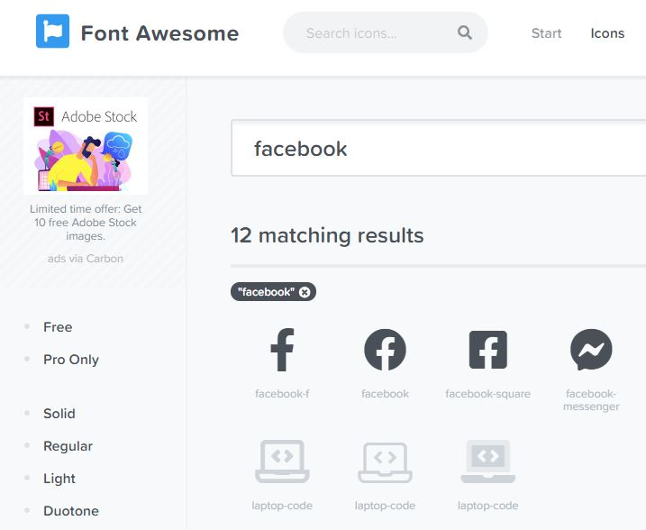
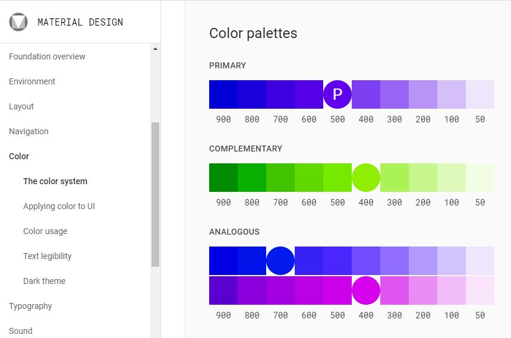

For someone working on front-end, choosing just 10 tools could be quite difficult. There are dozens, maybe hundreds amazing tools and resources that would definitely deserve your attention. But in order to keep this short and sweet, I had to do that. I will warn you, it will be personal, I'm not going into wide selections of code editors, dev tools, frameworks, browsers, nothing like that. Just an overview of my "secret sauce". Front-End is way more than just "the easier part of web development" - as many of you might argue. It requires creativity, attention to detail but foremost the understanding of your users. Don't overcomplicate, simplicity is the key!
Contents
LaunchCode
I'm proud to call LaunchCode my alma mater. LaunchCode is a nonprofit organization providing truly accessible training to everyone who is willing to learn the highly desirable tech skills and/or completely change their careers. They recognize that opportunities are sometimes not being equally distributed and do their best to help people like you and me become the next tech talent. I was very lucky to come across their stand at the Synapse Summit and have successfully completed their Python course, working through their LC101 at the moment. They never stop surprising me with their well thought off world-class learning content and can guarantee they have been the most helpful resource in my web development journey. Not in your area? Make sure to subscribe to their Youtube channel, check out their web, and GitHub for additional learning materials and don't forget to get inspired by their students!
W3 Schools
W3 Schools is an absolute need-to-know for any web developer. Apart from the fact that, yes it is the website that usually pops up first when you try to query Google with your intricate HTML/CSS questions, it is also one of the best reference websites (together with the next MDN) that should definitely be in your arsenal of bookmarks. It is full of definitions and usage examples that you can try out in their interactive environment. Don't limit the use just to the times when you need to quickly reference something, it has definitely more to give to you!
MDN
As already mentioned, MDN (or Mozilla Developer Network) is another documentation website you should be aware of. Many people would argue which one of these is "better" but I will just leave you with this to make your own mind!
Canva
I learned about Canva years ago from one of my friends who worked in Marketing, but I finally found my way back to it! Canva is probably the best design tool for non-designers. Yes, you hear it right, it was designed to make people's life easier by offering many pre-designed templates, icons, shapes, text and photos, all quick and easy to use. It can indeed create a very stunning graphics and the best is - it has a very extensive free tier!
Google Fonts

Google Fonts is a tool offering a collection of free fonts you can easily embed in your website. It was created with a goal to make the web more beautiful and faster and solve the problem of creating a unified experience for users. Fonts do definitely matter and Google helps you recognize many of these gaps and teaches you, for example, how to work with and modernize non-Latin based fonts through many of their educational articles.
Bootstrap
I had the goal not to talk about frameworks, especially React, Angular or Vue, but I can't help myself not to mention Bootstrap. Bootstrap was created by Twitter and is to date the most popular front-end framework. As more and more users had already switched to mobile (and there are in fact more mobile users than desktop) it is no surprise that responsiveness and mobile-first approach are gaining momentum. But Bootstrap not only supports mobile responsiveness but also helps increase the development speed by offering many UI elements and themes. And you might have already heard of the famous "bootstrappy" websites!
Favicon
Never heard of Favicon? It's the last finish, the nice little touch... The icon on the tab, on the left from the title (yes, the white pen on the greyish square). It's a part of the overall branding and also one of the means for a better and faster identification (especially if you keep a ton of tabs open). It has .ico file extension and its dimensions are usually 16x16px. You can find many tools online that will help you create your favicon. The one I used this time was favicon.cc.
Udemy
I think I don't need to introduce Udemy. It's one of the most cost-efficient ways to get access to quality learning materials or break into a completely different industry field. I wouldn't consider it exhaustive but I really enjoy their courses, be it their famous Zero from Hero or just a random project-based tutorial. I actually like to combine them all to get a full learning experience. What helps me the most is going over the same topic multiple times, with different courses, different instructors and different perspectives.
Font Awesome
Ever wondered where those perfectly shaped social buttons come from? It is most probably Font Awesome, the world's most popular and easiest to use icon set.
Material Design
And my last pick is Google's Material Design. Design philosophy and guidelines for app layouts, buttons, animations, and much more. On their website, you can find many different and extremely helpful tools and information to bring your designs to the next level.